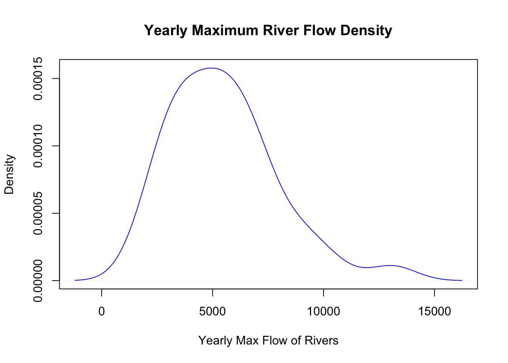
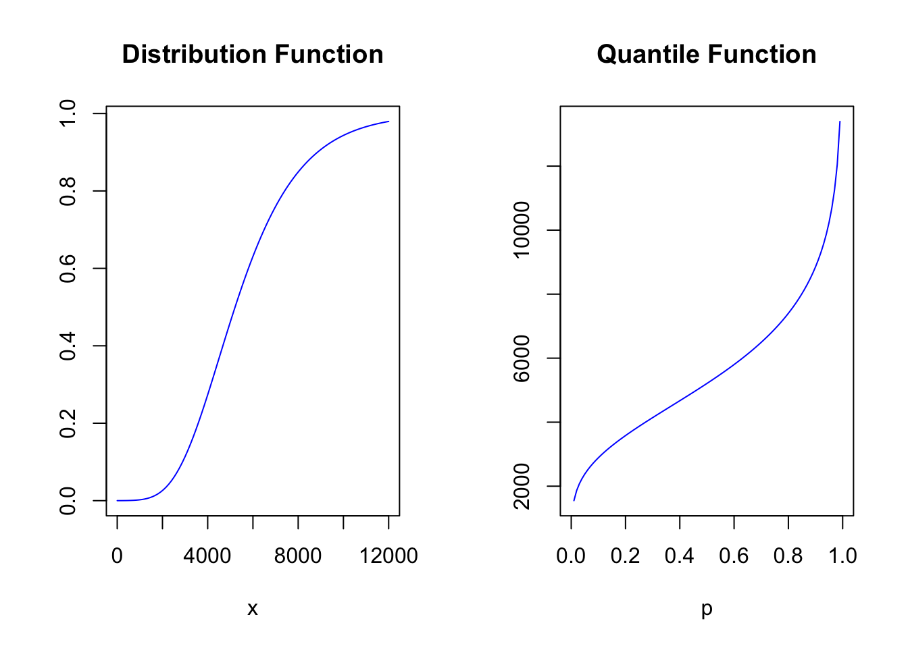
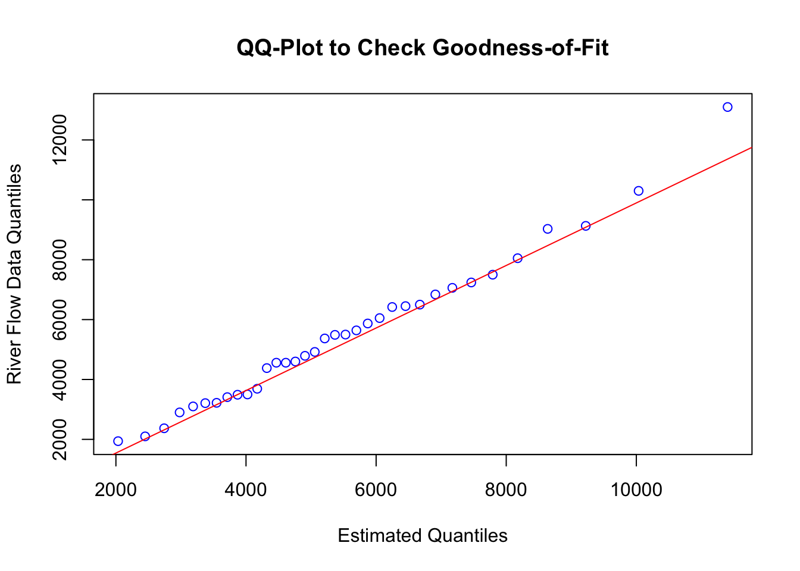

We have a small dataset obtained from a 1984 consulting session on the maximum flow of rivers measured from one station (\(n=35\) yearly maximums).
We want to find the MLEs of the paramaters of the location-scale extreme value distribution model, and use a QQ-Plot to check the goodness-of-fit.
We are given the Generalised Extreme-Value Distribution, for the special case where shape parameter \(\xi = 0\), which implies exponential tail decay. The density is:
\[ f(x|\mu,\sigma) = \frac{1}{\sigma}f_0\left(\frac{x-\mu}{\sigma}\right) = \frac{1}{\sigma}\exp\left[\frac{\mu-x}{\sigma} - \exp\left(\frac{\mu-x}{\sigma}\right)\right] \]
\[ f_0(x) = e^{-x}e^{-e^{-x}}, \qquad \mu \in \mathbb{R}, \qquad \sigma > 0 \]
The associated likelihood and log-likelihood functions are:
\[ \mathcal{L}(\mu,\sigma|x) = \prod_{i=1}^n \frac{1}{\sigma}f_0\left(\frac{x_i-\mu}{\sigma}\right) = \prod_{i=1}^n \frac{1}{\sigma}\exp\left[\frac{\mu-x_i}{\sigma} - \exp\left(\frac{\mu-x_i}{\sigma}\right)\right] = \frac{1}{\sigma^n}\prod_{i=1}^n \exp\left[\frac{\mu-x_i}{\sigma} - \exp\left(\frac{\mu-x_i}{\sigma}\right)\right] \]
\[ \ln[\mathcal{L}(\mu,\sigma|x)] = -n\ln(\sigma) + \sum_{i=1}^n \left[\frac{\mu-x_i}{\sigma} - \exp\left(\frac{\mu-x_i}{\sigma}\right)\right] = -n\ln(\sigma) + \sum_{i=1}^n \left[\frac{\mu-x_i}{\sigma}\right] - \sum_{i=1}^n \exp\left(\frac{\mu-x_i}{\sigma}\right) \]
This function has no closed-form solution that can be derived
analytically, so we need to use use R to estimate the
parameters numerically.
Note that we return \(-\ln[\mathcal{L}(\mu,\sigma|x)]\) since
R’s optim function default method is
minimising, and we are after the maximum.
# SET WORKING DIRECTORY TO LOCATION THIS FILE AND RIVERS.TXT ARE SAVED IN:
# setwd(dirname(rstudioapi::getSourceEditorContext()$path))
setwd(getwd())
# DECLARE AND DEFINE GEVD DENSITY AND LOG-LIKELIHOOD FUNCTIONS:
GEVD_FN <- function(parameters, x) {
mu <- parameters[1]
sigma <- parameters[2]
FN <- (1/sigma) * exp((mu-x)/sigma - exp((mu-x)/sigma))
return( FN )
}
GEVD_LL <- function(parameters, x) {
n <- length(x)
mu <- parameters[1]
sigma <- parameters[2]
LL <- -n*log(sigma) + sum((mu-x)/sigma) - sum(exp((mu-x)/sigma))
return( - LL )
}
# READ IN RIVER FLOW DATA FROM TEXT FILE:
RIVERS <- read.delim("rivers.txt", header = FALSE)[,1]
mean(RIVERS)## [1] 5493.714sd(RIVERS)## [1] 2454.108# OPTIMISE LOG-LIKELIHOOD FUNCTION FOR THE PARAMETERS:
optim(par = c(mean(RIVERS), sd(RIVERS)),
fn = GEVD_LL,
x = RIVERS,
method = "BFGS")## $par
## [1] 4501.432 1933.551
##
## $value
## [1] 319.4077
##
## $counts
## function gradient
## 13 11
##
## $convergence
## [1] 0
##
## $message
## NULL# GET PARAMETERS:
PARS <- optim(par = c(mean(RIVERS), sd(RIVERS)),
fn = GEVD_LL,
x = RIVERS,
method = "BFGS")$par
# PLOT THE RIVER FLOW DENSITY:
plot(density(RIVERS),
main = "Yearly Maximum River Flow Density",
xlab = "Yearly Max Flow of Rivers",
col = "blue")
We need the GEVD distribution function, obtained by integrating the density:
\[ F_X(x|\mu,\sigma) = \int_{-\infty}^x \frac{1}{\sigma}\exp\left[\frac{\mu-x}{\sigma} - \exp\left(\frac{\mu-x}{\sigma}\right)\right] dx = \exp\left[ - \exp\left( \frac{\mu-x}{\sigma} \right) \right] \]
By inverting the CDF we obtain the quantile function, which we can use for our QQ-plot:
\[ Q(p|\mu,\sigma) = F_X^{-1}(x|\mu,\sigma) = \mu - \sigma \ln(-\ln(p)) \qquad p \in (0,1) \]
We can now implement the distribution and quantile functions in
R, and obtain the QQ-plot:
GEVD_DF <- function(parameters, x) {
mu <- parameters[1]
sigma <- parameters[2]
return( exp( - exp((mu-x)/sigma) ) )
}
GEVD_QF <- function(parameters, p) {
mu <- parameters[1]
sigma <- parameters[2]
return( mu - sigma * log( - log(p) ) )
}
par(mfrow=c(1,2))
curve(GEVD_DF(PARS, x), xlim = c(0, 12000),
main = "Distribution Function",
col = "blue", xlab = "x", ylab = "")
curve(GEVD_QF(PARS, x), main = "Quantile Function",
xlab = "p", ylab = "",
col = "blue")
par(mfrow = c(1,1))
qqplot(GEVD_QF(PARS, seq(0, 1, 1/36))[2:36], RIVERS,
main = "QQ-Plot to Check Goodness-of-Fit",
xlab = "Estimated Quantiles",
ylab = "River Flow Data Quantiles",
col = "blue")
qqline(RIVERS, distribution = function(p) GEVD_QF(PARS, p), col = "red")